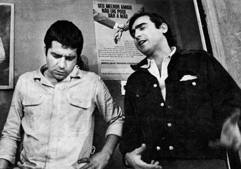
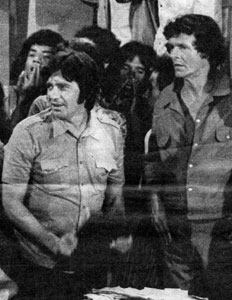
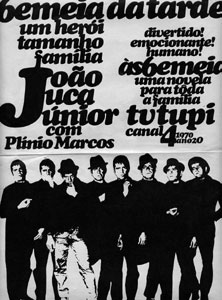

TRABALHOS COMO ATOR
participação como humorista e como o palhaço Frajola, na TV-5, de Santos, 1957/58
participações no programa TV de Vanguarda, da extinta Televisão Tupi, SP
participação na novela Éramos Seis, TV Tupi, SP
criação do personagem Vitório, na novela Beto Rockfeller, TV Tupi, SP,
[4/11/1968 a 30/11/1969]
protagonista e papel título da novela João Juca Júnior, TV Tupi, SP, 1969
criação do personagem Bem-te-vi na novela Bandeira 2, TV Globo, Rio de
Janeiro, 1971
personagem Vitório na série A Volta do Beto Rockfeller, TV Tupi, SP, 1973
participação na novela Tchan, A Grande Sacada, TV Tupi, 1976
participação no Teatro 2, teleteatro da Televisão Cultura, SP, dirigido por Ademar Guerra, fazendo o papel de São Francisco de Assis, proibido pela Censura Federal durante as gravações, 1975
TEXTOS ORIGINAIS PARA TELEVISÃO
(todos os textos, manuscritos e/ou datilografados, encontram-se no acervo de Plínio Marcos, organizado por seus filhos) RÉQUIEM DE TAMBORIM, peça em 3 atos exibida no TV de Vanguarda, programa da Televisão Tupi, SP, direção de Benjamin Cattan, em 9/2/1964
MACABÔ, uma adaptação de Macbeth, de Shakespeare, feita por Plínio Marcos e Benjamin Cattan, para o Tevê de Vanguarda, Televisão Tupi, SP; a ação se passa num terreiro de macumba; 26/7/1964
OS ÚLTIMOS MAMBEMBEIROS, novela infanto-juvenil, adaptação de histórias (9) publicadas na sua coluna diária Navalha na Carne, jornal Última Hora, SP, 1972. O primeiro capítulo chamava-se O Povo na Estrada e foi gravado na Tevê Record, SP, como piloto da série, mas nunca foi exibido. Direção: ZéLuiz Pinho. Elenco: Dercy Gonçalves, Etty Fraser, Walderez de Barros, Chico Martins, Carlos Costa, entre outros. Para driblar a censura, Plínio Marcos usava um pseudônimo: Pedro Marmo do Rosário.
DENTRO DA NOITE, 6 capítulos de uma telenovela; o herói, Neco, garoto pobre, torna-se um marginal, acossado pela polícia; 1972, inédita UMA HISTÓRIA DE SUBÚRBIO, peça em 3 atos, adaptada para televisão de um conto inacabado com o mesmo título; história de futebol; exibida em 1972, TV Globo
BIRA MORFÉTICO, primeiro capítulo de uma série, adaptação de um romance inacabado, por sua vez adaptado de um conto, cuja primeira versão foi publicada no livro Histórias das Quebradas do Mundaréu (1973), inédita AMOR E GLÓRIA DE CAXINGUELÊ E CLARINHA, sinopse de novela musical; a ação desenrola-se numa escola de samba; meados da década de 70, inédita PROPRIEDADE PRIVADA, especial para tevê, humorístico, 1975, inédito (SEM TÍTULO), datilografado como TEXTO DE PLÍNIO MARCOS, escrito para o programa Tevê de Vanguarda; ação se passa num terreiro de macumba e conta a história dos orixás, sem data O QUADRO, peça curta especial para tevê, 1965 A NOITE DO DESESPERO, especial para tevê, escrita para a Televisão Tupi, SP, história de dois marginais que assaltam um ônibus, 1974 COISAS DA CIDADE, especial para Televisão Tupi, com os sambistas Geraldo Filme, Zeca da Casa Verde e outros, 1973. (Há uma crônica com o mesmo título, que também conta histórias desses sambistas.) PEQUENA HISTÓRIA DO SAMBA DE SÃO PAULO, especial para a Televisão Tupi, texto e narração de Plínio Marcos; entrevistadores: John Herbert e Carlos Zara; com Geraldo Filme, Zeca da Casa Verde e Toniquinho Batuqueiro; e mais: Dona Sinhá, Juarez da Cruz, Inocêncio Mulata, Carlão da Vila Maria, Dionísio Camisa Verde, Pé Rachado e Escola de Samba Mocidade Alegre da Casa Verde.
O TROCO, novela em cinco capítulos; original manuscrito do primeiro capítulo;
história de dois marginais, sem data, inédita (SEM TÍTULO), especial escrito para Rede Globo de Televisão; ação se desenrola na escola de samba da Barra do Catimbó; os personagens são os mesmos do romance e de vários contos escritos sobre a Barra do Catimbó; 1971 SOMENTE UMA VEZ NA VIDA, adaptação para televisão de um conto com o mesmo título, publicado no livro Histórias das Quebradas do Mundaréu; uma história de futebol; escrito para o programa Fantástico, da Rede Globo de Televisão; 1974
(SEM TÍTULO), sinopse para uma novela, história de futebol, 1973, inédita FIM DE CARREIRA, especial para televisão, história de um jogador de futebol,manuscrito sem data, inédito O SONHO ACABOU, escrito para o programa Caso Verdade, da Rede Globo; tema: Corinthians. No final do manuscrito há um bilhete de Plínio Marcos a Walter Avancini, o diretor do programa; há também uma carta de Fernando Jordão, responsável pelo programa, datada de 23.3.76. Mas, o programa jamais foi gravado. OBSERVAÇÃO:
Em 1996, participava do CNT Jornal, da Televisão Manchete, respondendo a perguntas dos telespectadores e comentando fatos da semana.